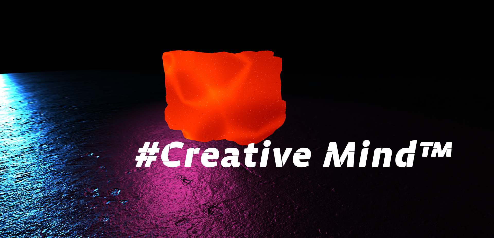

#Creative minD™
From fantasy to reality in one click.
A collection of NFT artifacts for fans of realistic graphic compositions, collectors and just anyone who loves science fiction. Artifacts of different formats and purposes are provided, everyone will find their true value for themselves!
Features of the Creative minD collection
Each artifact has certain properties that will be useful to players for virtual battles. Each artifact from the Creative minD collection allows its owner to fight with the same players who own the artifacts.
Each artifact has certain properties that will be useful to players for virtual battles. Each artifact from the Creative minD collection allows its owner to fight with the same players who own the artifacts.
Benefits of Creative minD Trading Cards
1) Ability to integrate into web projects. Collectible game artifacts are not only NFTs, but full-fledged web assets. This is an embedded graphical web interface that their owner can use on their website or web application.
2) 3D design. Trading cards are animated 3D compositions developed using WebGL technology. When buying NFT, all source codes are attached to the buyer.
3) Diversity. 25 cards differ in graphic design, value and history. Each card is a separate game artifact that tells its own legend.
4) Flexible economy. Each artifact card has a different value. It all depends on the type of artifact and its game functions.
Game locations:
Dragon cave
Dragon Cave - Sunrise
Cave of Ice Despair
Gallery of the Void
Fog of fear
Sands of Time - currently under development
Each location is distinguished by graphic elements, themes and bonuses for players.
Black hole
One of the strongest artifacts in the Creative minD collection. Acquiring this artifact automatically grants the player the highest attack bonuses.
Life force
A unique artifact that gives new life to the game even after defeat. Possession of this artifact gives you a 2nd chance in combat.
Power Stones
Artifacts of a universal profile that give the player a variety of abilities and bonuses. Once the Secrets of the Galaxy gem is released, the stats for each gem will be revealed!
World Maker
An artifact for everyone who is not ready to fight in splendid isolation. Provides its owner with the help of higher powers in the game, with which no opponent wants to deal.
These are just some of the most valuable gaming relics in the Creative minD collection. More relics available in the game! Open access to relics now to win on the virtual battlefields tomorrow!